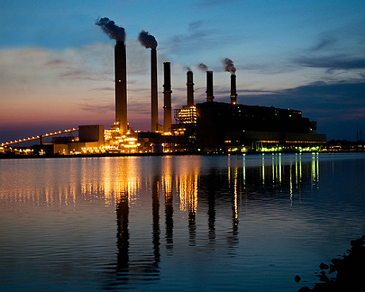

Every year, over 16,000 facilities in the US emit toxic air and greenhouse gases into the atmosphere. But a small group — less than 10 parent companies — are responsible for most of it.
If a couple of friends are splitting a pizza, and one person takes a third of the whole while the other six are left to split the rest, we call it unfair. Some might even call the first friend greedy. But when a tiny amount of factories are responsible for a third of all emissions in the United States, we call them something different: super polluters.
In January of 2016, academics from State University of New York released a study analysing the pollution emissions of all facilities reporting to the Environmental Protection Agency’s Toxic Release Inventory (TRI) program.
They wanted to test the concept of environmental disproportionality, a term coined by environmental sociologist William Freudenburg which describes when “a small fraction of the population consumes many more resources or produces much more pollution than other members”.
In other words, they wanted to know who has been taking more than their fair share of the pollution pie.
After studying the reports of toxic air emissions, the researchers found what they were looking for: a “small group of disproportionate generators” that represented “toxic outliers” in the dataset. They found that of the nearly 16,000 facilities reporting in 2014, less than 1,500 (or about 10%) were responsible for over 90% of toxic air emissions. They also found a significant correlation that shows these toxic outliers may be affecting minority populations in rural areas more so than white, urban populations.

The Gibson Power Station is located in Southwest Indiana, a rural hub for coal power plants. It's owned by Duke Energy, one of the biggest energy conglomerates in the US. (Photo by Duke Energy, Creative Commons)
The TRI database, which currently shows data from 2010 to 2014, tracks all output of toxic chemicals that may be a threat to human health. But toxic air emissions aren’t the only dirty thing being released by these factories. Many of them, especially the power plants, release huge amounts of greenhouse gases — a well-documented contributor to global warming and climate change.
Toxic air and greenhouse gases share the quality of being harmful, but they cause different problems. One dirties the air people breathe with particulate matter and chemicals, bringing risks of lung cancer, asthma and cardiovascular disease; the other changes our atmosphere, melting glaciers and raising sea levels as the average global temperature increases.
Perhaps the most important shared quality, however, is that someone is responsible for them. That’s why in September of 2016, the Center for Public Integrity published an investigation showing an “unprecedented picture of air emissions” in the US. After merging two federal datasets of toxic air and greenhouse gases, the Center found that the same disproportionality that exists in toxic air polluters is also present among the highest emitters of greenhouse gases.
In fact, in both datasets the top 100 worst companies were responsible for emitting more than their fair share of toxic air and greenhouse gases. Data from the TRI report shows that the top 100 worst plants are responsible for over one-third of toxic air emissions. The top 100 worst companies from the other dataset take up one-fourth of all greenhouse emissions.
Top 100 worst companies for toxic air and greenhouse gas emissions
Source: EPA, Center for Public Integrity. Download data.
From the combined dataset, the Center has highlighted a new ranking system, a sort of worst-of-the-worst list of facilities made up of 22 facilities on the top 100 for both toxic air and greenhouse gases. Though these dual-super polluters don’t have a dedicated name yet, they represent some of the worst facilities in the country for combined environmental risk. And despite being spread across Midwestern America, the responsibility for most of these facilities ultimately stops with just a few parent companies, the ultimate owner of each facility.
In the heart of coal country
Unsurprisingly, many facilities deemed super polluters by environmental academics can be found spanning the length of US "coal country." This region, stretching from northern Pennsylvania across the Midwest and down to Texas, has long been home to coal mines and power plants.
Though the types of facilities reporting greenhouse gas emissions vary, the list of super polluters is made up of almost exclusively power plants. For toxic air emissions, the data varies slightly with chemical, waste and paper plants also appearing on the top 100 list.
Where are the super polluters?
The above map displays the location of each super polluter along with their ranking on the top 100 lists for toxic air and greenhouse gases. Click on the buttons below to switch between the three lists and see where the facilities are located.
The top 100 polluters for toxic air remain largely confined to the eastern half of the US, with two noticeably large clusters near Indiana and another around Louisiana. The worst polluters for greenhouse gases are slightly more spread out, but large pockets can be seen near Pennsylvania.
When cross-referencing the datasets, the 22 super polluters appear almost exclusively in this midwest region. Of the list, 17 facilities are located within a 600 mile radius. For reference, that’s about the same size as the United Kingdom, from the tip of Scotland down to the English Channel.
The Center for Public Integrity’s analysis also revealed that more toxic air was emitted within 30 miles of the Indiana town of Evansville (population ~120,000) than any large American city in 2014.
Evansville is an unusual town. Despite it’s small size, it hosts four of the 22 dual-super polluters. And despite containing only six-percent of the state population, the region around Evansville produces more than 40% of Indiana’s electricity output.
Discovering how this came to be requires a deep dive into energy legislation and the history of coal-towns. But it’s worth noting that Indiana was among the 27 states that attempted to resist a federal rule to restrict toxic emissions from coal and oil-fired power plants. It also helps that its previous governor, Mike Pence — the new vice President-elect — is notoriously pro-coal and skeptical of climate change science.
Following the money
The ratio of emissions in the US presents a stark picture of disproportionality. But if you follow the money, the gap of disproportionality gets even wider.
Most of the facilities on the EPA’s TRI report are owned by parent companies. By grouping each facility by ownership and totaling these emissions, the data shows that only 10 parent companies were responsible for over 25% of all toxic air emissions in the US in 2014. That’s from a list of over 20,000 possible parent companies.
Grouping the facilities by parent companies also takes the emphasis off individual plants and onto the companies that own them. For example, none of the plants owned by the International Paper Co. show up as super polluters on the map. But taken collectively, International Paper Co. is responsible for more toxic air emissions than any other parent company in the US.
Toxic air facility ownership by parent company
The treemap below represents the total toxic air emissions for each parent company. The size of a box represents how many facilities each company owns. Darker shades of red represent the highest emitters. Click on a box to see individual facilities. Right-click to go back to the parent company view.
When it comes to greenhouse gas emissions, the indicators become less clear. Most facilities reporting on the GHG dataset are under shared ownership, with multiple parent companies owning a certain percentage of the facility. However, of the facilities under 100% ownership by a single company, the top 10 parent companies were responsible for about 19% of all greenhouse gas emissions. Since these parent companies generally also possess shared ownership of other facilities, this percentage is likely lower than the true figures.
The following table shows the top 10 worst parent companies in both categories, with the total amount of emissions and the number of facilities owned. Among the top 10 parent companies for both greenhouse gas and toxic air emissions, five companies appear on both lists. That means that collectively, these companies are among the top 10 worst in the country for both toxic air and greenhouse gas emissions.
They include four corporations: American Electric Power, NRG Energy Inc., Duke Energy Corp and Southern Co. The fifth parent company to appear on both top ten lists isn’t actually a corporation — it’s the US Government.
Parent companies responsible for toxic air and greenhouse gas emissions
The following table shows each parent company, the total amount of emissions and the number of facilities owned. Click the buttons to scroll through tables for toxic air (in metric tons), greenhouse gases (in pounds) and a list of parent companies appearing on both.
Like many dominant companies, these five conglomerates push their influence on legislation via lobbying. Three of the them — American Electric Power, Duke Energy and Southern Co — are members of the American Coal Ash Association (ACAA), a national lobbying group promoting coal ash interests. Collectively they make up one of the most influential corporate lobbying groups for coal and energy companies in the US today.
2016 was a big year for lobbyists, a year when one of the most unpredictable US elections would be decided. The Tennessee Valley Authority — the only federally-owned corporation on the list — was the only group absent from lobbying records. However, the Center for Responsive Politics recorded lobbying contributions by the other four companies for the recent election cycle. They found that NRG Energy ranked 411th for highest contributions of the 3,644 lobbying companies in 2016. American Electric Power was 64th and Duke Energy came at 54th. Southern Co ranked 15th, with over $10million contributed for the year.
When looking at the numbers behind air pollution, the total amounts can be staggering: millions upon millions of dollars in lobbying, metric tons of greenhouse gases and pounds of toxic air emissions. Amounts so large it’s hard to process them.
But on the receiving end of the numbers are real, tangible realities. Lobbying dollars contribute to campaign ads and legislation groups. Greenhouse gases — which are predominantly released by human activity — are exponentially increasing the earth’s greenhouse effect. And multiple studies have linked cardiovascular risk and lung diseases with long-term exposure to particulate matter from air pollution.
Data on which companies are emitting the most pollution can help shed light on the state of power plants in the US. As huge conglomerates, tracing the individual facilities back to their owners reveals how many plants each company has accumulated over time. Yet as with all datasets, behind the numbers are the lives of people. Over eight million Americans reside within a three-mile radius of a coal power plant. Of this group, the average per capita income is $18,594, almost $3,000 less than the US average.
Solving America’s energy and climate problems will never be an easy fix. A country built on coal and reliant on cars over public transport will inevitably require a massive amount of energy. In its current state, a few parent companies are dictating the future of America’s pollution, showing signs of environmental disproportionality at work.
They came early to the party; and they took the biggest slices first.